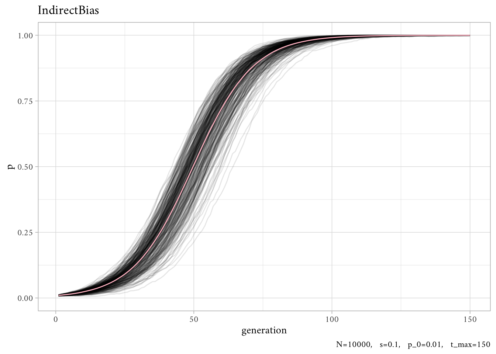
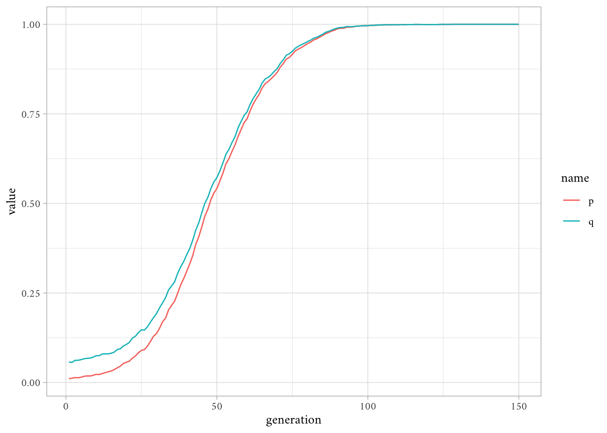

In this model, certain demonstrators are more likely to be copied than other demonstrators.
Indirect bias comes in several forms. Learners might preferentially copy demonstrators who have high success or payoffs (which may or may not derive from their cultural traits), demonstrators who are old (and perhaps have accrued valuable knowledge, or at least good enough to keep them alive to old age), demonstrators who are the same gender as the learner (if cultural traits are gender-specific), or demonstrators who possess high social status or prestige.
5.1 Payoff Bias
In this model, new agents preferentially copy the traits of those agents in the previous generation who exhibit higher relative payoffs. This is sometimes called “payoff” or “success” bias.
The main difference between this model and the one in Chapter 4 is that demonstrator choice is no longer random; demonstrators are chosen based on their payoffs. Thus, we need to implement payoffs for each agent.
We will assume that an agent’s payoff is determined solely by the agent’s cultural trait. Agents with trait \(B\) have payoff of \(1\) (a “baseline” payoff), while agents with trait \(A\) have payoff of \(1+s\). This means that trait \(A\) gives a payoff advantage to its bearers, relative to agents possessing trait \(B\). The larger is \(s\), the bigger this relative advantage.
IndirectBias <-function( N, # number of agents, s, # relative advantage, p_0, # initial proportion of trait "A", t_max # number of generations ) { agent <-data.frame(trait =sample(c("A", "B"), size = N, replace =TRUE, prob =c(p_0, 1-p_0)) ) agent$payoff[agent$trait =="A"] <-1+ s agent$payoff[agent$trait =="B"] <-1 agent_list <- purrr::accumulate(.x =2:t_max, .init = agent, .f =function(agent, ...) { previous_agent <- agent ## copy agent to previous_agent dataframe relative_payoffs <- agent$payoff /sum(agent$payoff) ## get relative payoffs agent$trait <-sample(x = previous_agent$trait, size = N, replace =TRUE, prob = relative_payoffs )## add payoffs agent$payoff[agent$trait =="A"] <-1+ s agent$payoff[agent$trait =="B"] <-1return(agent) }) p <- purrr::map_dbl(agent_list, function(agent) sum(agent$trait =="A") / N)return(p)}
out <-rerun_parallel(S =300, IndirectBias, N =10000, s =0.1, p_0 =0.01, t_max =150)plotSimulation(out)

This S-shaped curve is very similar to the one generated in Chapter 4 for direct bias. This shouldn’t be surprising given that “an agent’s payoff is entirely determined by their cultural trait. Under these assumptions, preferentially copying high payoff agents is functionally equivalent to preferentially copying high payoff traits.”
This is not always the case.
5.2 Hitch-hiking
A more interesting case of indirect bias occurs when individuals possess two cultural traits, one functional and the other neutral. Under certain circumstances, payoff based indirect bias can cause the neutral trait to ‘hitch-hike’ alongside the functional trait. Neutral traits can spread in the population simply because they are associated with high payoff traits in high payoff demonstrators, even though they have no effect on payoffs themselves.
In the previous model, trait \(A\) is functional in that it has a higher payoff than \(B\) when \(s \gt 0\). A neutral trait, on the other hand, has no effect on payoffs, much like the traits in Chapter 2 (unbiased transmission).
Here, we will add a second neutral trait to IndirectBias(), which we label \(X\) or \(Y\). We also define \(q\) as the proportion of \(X\) in trait 2.
We will model a situation where the two traits may be initially linked. We are not going to be concerned here with why the two traits are initially linked. The link could, for example, have arisen by chance due to drift in historically small populations. We will leave this as an assumption of our model, which is fine as long as we are explicit about this.
\(L\) specifies the probability that, in the starting generation, if an individual has \(A\) for trait 1 it also has \(X\) for trait 2. When \(L = 1\), there is a maximum linkage between the two traits—i.e., all individuals with \(A\) also have \(X\). As \(L\) gets smaller, this linkage breaks.
In sum, the demonstrators are picked as before (based on relative payoffs), except that trait 2 is copied from the same demonstrator alongside trait 1.
Note. There’s also a new parameter\(q_0\)which looks a lot like\(p_0\)but is conditional on\(L\).
IndirectBias2 <-function( N, # number of agents, s, # relative advantage, L, # probability that specifies linkage between "A" and "X", p_0, # initial proportion of trait "A", q_0, # initial proportion t_max # number of generations ) { agent <-data.frame(trait1 =sample(c("A", "B"), size = N, replace =TRUE, prob =c(p_0, 1-p_0)),trait2 =rep(NA_character_, N) ) # with prob L, trait 2 is tied to trait 1 prob <-runif(N) agent$trait2[agent$trait1 =="A"& prob < L] <-"X" agent$trait2[agent$trait1 =="B"& prob < L] <-"Y"# otherwise trait "X" with prob q_0 (and "Y" with 1 - q_0) agent$trait2[prob >= L] <-sample(x =c("X","Y"), size =sum(prob >= L), replace =TRUE,prob =c(q_0, 1-q_0) ) agent$payoff[agent$trait1 =="A"] <-1+ s agent$payoff[agent$trait1 =="B"] <-1 agent_list <- purrr::accumulate(.x =2:t_max, .init = agent, .f =function(agent, ...) { previous_agent <- agent ## copy agent to previous_agent dataframe relative_payoffs <- agent$payoff /sum(agent$payoff) ## get relative payoffs# new traits copied from previous generation, biased by payoffs demonstrators <-sample(1:N, size = N, replace =TRUE, prob = relative_payoffs) agent$trait1 <- previous_agent$trait1[demonstrators] agent$trait2 <- previous_agent$trait2[demonstrators]## add payoffs agent$payoff[agent$trait1 =="A"] <-1+ s agent$payoff[agent$trait1 =="B"] <-1return(agent) }) p <- purrr::map_dbl(agent_list, function(agent) sum(agent$trait1 =="A") / N) q <- purrr::map_dbl(agent_list, function(agent) sum(agent$trait2 =="X") / N)data.frame(p, q)}
out <-IndirectBias2(N =10000, s =0.1,L =0.9,p_0 =0.01,q_0 =0.5,t_max =150)out |>rowid_to_column("generation") |>pivot_longer(!generation) |>ggplot(aes(generation, value, color = name)) +geom_line()

HOW DO I INTEGRATE THIS WITH THE HELPER FUNCTIONS??